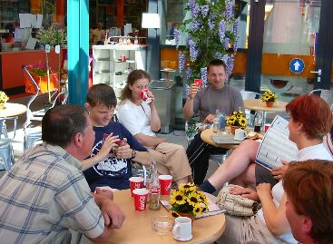
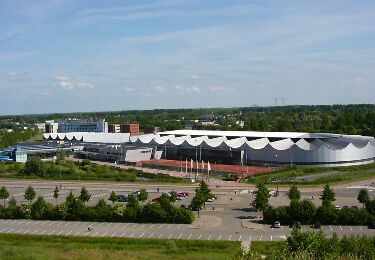

|
Нидерланды (Июнь 2003) - Нидерланды: день 6
Июнь 16, 2003 /9804 PB NOORDHORN, NETHERLANDS/
Уже как бы договорились, что сегодня поедем в музыкальный магазин =). Сели по машинам. В машине Анжела предложила поехать с ней в бассейн, а я предпочёл шоп. Каково же было моё удивление, когда мы приехали в магазин со строительными материалами для дома!! Проторчали там два с половиной часа!

Отдых после продолжительного похода в магазине
Потом меня немного успокоили, дав попить прохладного напитка, и сказали, что завтра поедем за плеером. Поехали забирать Анжелу. Приехали. Мой отец с хозяином пошли на какую-то гору, чтобы фотографироваться. Я пошёл смотреть, что за бассейн у них.

Бассейн [вид с горы]
Оба, Анжелу встретили в купальнике на улице. Я сначала не понял чего она в купальнике. Оказалось, что часть бассейна выходить наружу. Рядом утки ходили, типа ручные, только вот ко мне на руки они не захотели. Подождали, пока она оденется, и поехали домой. Пока ехали, весело пообщался с Анжелой. С ней легко общаться =). Договорись, что сегодня вечером я приеду к ней, и она сделает мне причёску :).
Приехали домой, собрались опять уезжать. На этот раз на мельницу. Гордятся они своими мельницами :). А как мужик нудно всё рассказывал :((, я чуть не заснул. Ну, типа я не знаю, что от ветра начинают крутиться крылья или как их там. После этой э-э прогулки поехал я к Анжеле. Посадила меня на стул и начала издеваться над моей причёской. Её брат принёс мне пива, сам рядом сел, немного поспикали. В общем, чё получилось из моей причёски можно лицезреть на фотке, благо пока я сидел и ждал когда волосы высохнут, Hans (отец Анжелы) сфоткал нас раз 15-ть. Конечно, фотоаппарат цифровой же :). Потом прислал эти фотографии моему хозяину по электронной почте. И я свою почту проверил. Как только залез, сразу собщение от MSN Messenger "привет". Кто-то явно хотел пообщаться =). Я ему отвечаю, что Франсиска спит, он говорит, что знает. "А ты один из русских?" – спрашивает он. "Ну, да" – отвечаю. Пообщались мы с ним где-то 40 минут. Он завтра с нами тоже пойдёт в кинотеатр. Тоже хочет Матрицу 2 посмотреть :)).
Till next time.
finn ©
|